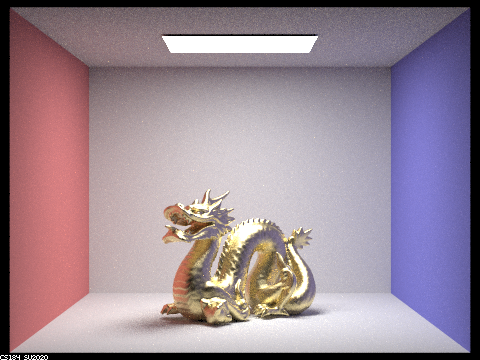

This project extended 3-1 to allow me to render various other scenes and play with camera lenses. I chose tasks 2 and 4.
For this part, the implementation was pretty straightforward when following the spec. Some places that tripped me up were I hardcoded eta and etaK for a while before I realized I needed to use the variables. For a long time my scene was rendering with the spheres black, so I spent some time going over each function, and I realized I was creating my h vector incorrectly by using p_theta and p_phi instead of theta and phi.
For task 1, this equation was given in the spec.
Since n is the vector (0, 0, 1), (n * w) ends up being just the z portion of w, or cos_theta(w).
For task 2, to calculate the NDF, this equation was given in the spec.
The NDF defines how the microfacets' normals are distributed. Theta in this equation is the angle between h and n, but because, n is the vector (0, 0, 1), theta ends up being the cosine inverse of the z-axis portion of h. Since n is the vector (0, 0, 1), (n * w) ends up being just the z portion of w, or cos_theta(w).
For task 3, to calculate the Fresnel term, this equation was given in the spec, which is the Fresnel term for the R, G, and B channels.
Theta is the angle between wi and n, making it cosine inverse of the z portion of wi. Other than that, following the equations was straightforward, except for a short period where I was hard coding the eta and k values.
For task 4, to implement the BRDF sampling function, these equations were given.
We use pdfs p_theta and p_phi and the result of integrating and inversing them, theta and phi, to get h.
Then we reflect wo according to h to get the sampled wi. From there, we calculate p_w(h), which is the pdf of sampling h w.r.t solid angle, and then p_w(wi), which is the final pdf of samping wi w.r.t solid angle. Then we return the result of calling MicrofacetBSDF::f on wo and the sampled wi. The main challenges in this area for me was first, I forgot the arctan on theta for a bit. I also mixed up theta and p_theta with p_theta and phi when calculating h. I calculated h using this equation from Wikipedia.
I used this equation to reflect wo to get wi.
As alpha increases, the amount of noise decreases and the surface becomes more matte and appears less smooth.
With the importance sampling (shown second), the image looks much more realistic to copper and has less noise. In addition, cosine hemisphere sampling looks a lot darker for some reason. I don't know if this is expected.
I used silver with CBdragon_microfacet_cu.dae. The values for eta are (0.059193, 0.059881, 0.047366) and for k are (4.1283, 3.5892, 2.8132)
For this task, I followed the spec and it turned out to be simpler than I thought. I took my code from 3-1 to get the direction that the camera was pointing. Then I uniformly sampled the disk representing the thin lens, and found pfocus, with is the camera_position * focal distance - (sample on lens). I then normalized pfocus and created a new ray that began at the sample on the lens and headed in the direction of pfocus.
With a Pinhole camera, the entire image is always in focus while with a thin-lens camera model, the focus is changed by adjusting the focal length and and lens radius and depending on the aperture, the whole scene may not be in focus. In a Pinhole camera, the amount of light entering is fixed, while in a thin-lens camera, the amount of light can be varied by changing the aperture.